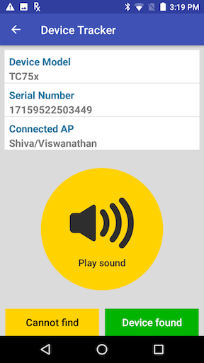

Overview
Monitoring device presence and prevention of misplaced devices is important for smooth operational productivity. This section covers the procedures to organize, track, locate, and prevent misplaced devices.
Locating Devices
The facility administrator monitors devices from the admin dashboard and can mark a device "To be found" if it is misplaced or at risk, e.g. needs to be charged due to low battery. The administrator assigns an associate to search the target device by using their Zebra device to locate the general area the target device resides based on the Access Point (AP) where it last connected. Then a sound can be played by tapping the Play Sound button on the associate's device to locate the target device by audio sound, determining its location. The volume level and sound duration can be adjusted in the server Settings.
Important:
- WiFi must be enabled on both devices.
- When Play Sound is tapped repeatedly on the client during network congestion, the congestion may cause a delay in the playback. Once the congestion disappears, the audio plays back multiple times based on the number of taps.
- During network congestion, client requests over WiFi frequency band 2.4 GHz may not reach the server. For example, requests to Play Sound may not reach the intended device. In this situation, Zebra recommends to move to a 5 GHz frequency band or move to another network without congestion.
Procedure to find a device
The procedure to locate a device follows (based on user role):
Administrator marks the target device "To be found".
[Admin] From the dashboard in the web portal, the administrator selects the device to find within the table and sets it to the “To be found” state:
A. Tick the checkbox for the device row.
B. Click on the Action menu and select “Set device: ‘To be found’”.
C. Click “OK” on the confirmation message. The device status changes from "Active" to "To be found".
The next time the target device reports to the server, it identifies it is marked "To be found" with a notification message. The length of time this takes is based on the Reporting Frequency.An associate is tasked to find the device.
[Admin] The administrator assigns an associate to find the device, using the client app on their device as a locationing tool.Start device search based on connected AP.
[Associate] Open Device Tracker client on the associate's device. In the list of "Devices to be found", tap on the target device to find. The Device Details screen appears providing information on the device including “Last Connected AP”, which identifies the last known AP zone where the device is located. Walk to the AP zone and tap Go to begin the device search.
[Admin] On the admin dashboard, the device automatically changes state from "To be Found" to "Being Found".Play sound to search for device
[Associate] Once in the AP zone, tap Play Sound on the associate's device to play audio on the target device. Walk towards the chirping sound heard to locate the target device. To return back to the main screen, tap the device back button.
Important: The time specified in the Reporting Frequency needs to elapse before the sound can be played. For example, if the Reporting Frequency is set to 5 minutes, the associate must wait for 5 minutes before tapping Play Sound. Once the target device reports to the server and receives the flag that it is in the "To be found" state, it automatically changes the reporting frequency to 3 seconds for more frequent updates to the server until the device has been found.  Figure 1. Device Tracker clientDevice found.
[Associate] Once the device is found, tap Device found at the bottom of the screen. Some devices may require the user to scroll down the screen for the button to be visible. Tap “Yes” to the confirmation message to designate the device as found.
[Admin] On the dashboard, the device status changes from “Being found” to “Device has been found”. The admin can take action to set the device back to the “Active” state, placing it back into the active device pool:
A. Select the device in the dashboard.
B. In the Action menu, select "Set device to: Active".
C. The device is moved out of the "Found" state into the "Active" state.
Cannot find device
If the device cannot be located, in step 4 above tap on "Cannot find" and proceed to tap "Yes" to the confirmation message. On the admin dashboard, the device status is changed from "Being found" to "Cannot find".
Prevent Misplaced Devices
Prevent devices from being misplaced by monitoring the low battery state so action can be taken by the administrator to charge the device prior to battery loss. Configure the “Low Power Alert Threshold %” in the Settings screen from the web portal to set the threshold value. When a device battery drops below this defined threshold, the device is listed in the Low Battery section in the admin dashboard. The admin can then initiate the device to be located by marking the device "To be found".